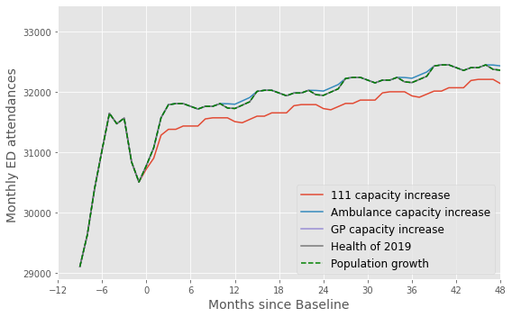
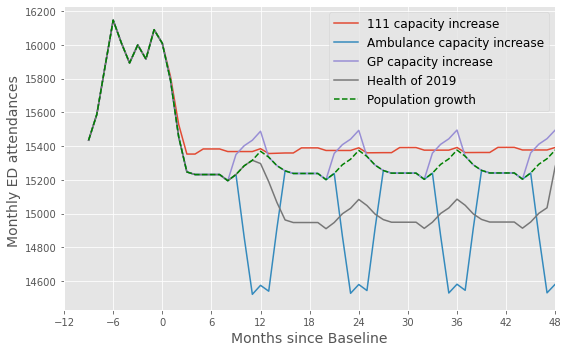

Future demand at CCG level
Contents
Future demand at CCG level#
#turn warnings off to keep notebook tidy
import warnings
warnings.filterwarnings('ignore')
Run forecasting notebook#
%run ./stacked_forecast.ipynb
0.4519048888936743
0.4227235191823048
0.7115831805529126
0.7596144008785489
(1618, 14)


Combined training score: 0.8795260326236356
results
| ccg | month | 2019 | 2020 | 2021 | 2022 | 2023 | 2024 | 2025 | 2026 | 2027 | |
|---|---|---|---|---|---|---|---|---|---|---|---|
| 0 | 00Q | Jan | 15570.0 | 15382.955000 | 15098.926198 | 15100.848326 | 15101.859973 | 15874.355786 | 15869.250671 | 15863.294703 | 15856.381527 |
| 1 | 00Q | Feb | 14493.0 | 15175.861940 | 14891.747074 | 14893.642828 | 14894.640593 | 15667.169722 | 15662.131237 | 15656.253004 | 15649.430055 |
| 2 | 00Q | Mar | 15748.0 | 15175.861940 | 14891.747074 | 14893.642828 | 14894.640593 | 15667.169722 | 15662.131237 | 15656.253004 | 15649.430055 |
| 3 | 00Q | Apr | 15929.0 | 15252.708754 | 14968.625824 | 14970.531365 | 14971.534281 | 15744.051047 | 15738.987837 | 15733.080759 | 15726.224329 |
| 4 | 00Q | May | 16180.0 | 15321.412964 | 15037.358585 | 15039.272876 | 15040.280398 | 15812.786111 | 15807.700797 | 15801.767930 | 15794.881566 |
| ... | ... | ... | ... | ... | ... | ... | ... | ... | ... | ... | ... |
| 907 | X2C4Y | Aug | 17191.0 | 16211.368152 | 16259.624026 | 16306.118469 | 16349.457014 | 16389.639662 | 16427.547128 | 16464.463788 | 16499.839197 |
| 908 | X2C4Y | Sep | 17115.0 | 15858.666878 | 15905.872877 | 15951.355767 | 15993.751421 | 16033.059838 | 16070.142574 | 16106.256060 | 16140.861827 |
| 909 | X2C4Y | Oct | 17229.0 | 15567.474340 | 15613.813555 | 15658.461301 | 15700.078497 | 15738.665144 | 15775.066976 | 15810.517357 | 15844.487702 |
| 910 | X2C4Y | Nov | 17153.0 | 15474.697068 | 15520.760116 | 15565.141775 | 15606.510946 | 15644.867628 | 15681.052517 | 15716.291624 | 15750.059516 |
| 911 | X2C4Y | Dec | 17813.0 | 15830.887182 | 15878.010490 | 15923.413707 | 15965.735096 | 16004.974657 | 16041.992434 | 16078.042661 | 16112.587808 |
812 rows × 11 columns
Plot for CCG#
results.ccg.unique()
array(['00Q', '00R', '00T', '01E', '01G', '01J', '01K', '01V', '01W',
'01Y', '02E', '02H', '02P', '02X', '03F', '03H', '03L', '03N',
'03Q', '03R', '04C', '05W', '06H', '06K', '06N', '06Q', '06T',
'07H', '07K', '09D', '10Q', '10R', '11M', '11N', '11X', '12F',
'13T', '14L', '14Y', '15A', '15C', '15E', '15F', '15M', '15N',
'16C', '18C', '26A', '27D', '36J', '36L', '42D', '52R', '70F',
'71E', '72Q', '91Q', '92A', '92G', '93C', '97R', '99A', '99C',
'99E', '99G', 'A3A8R', 'B2M3M', 'D2P2L', 'D4U1Y', 'D9Y0V', 'M1J4Y',
'M2L0M', 'W2U3Z', 'X2C4Y'], dtype=object)
26A#
ccg = '26A'
fig,ax = plt.subplots(figsize=(8,5))
scenarios = ['Population growth','111 capacity increase',
'Ambulance capacity increase','GP capacity increase', 'Health of 2019']
for i,results in enumerate(scenario_results):
if i==0:
continue
results_ccg = results.loc[results.ccg==ccg]
points = sum_by_month(results_ccg)
points_series = pd.Series(points)
plt.plot(np.arange(-12, 96),
points_series.rolling(window=4).mean().to_list()[:], label = f'{scenarios[i]}')
points = sum_by_month(scenario_results[0].loc[scenario_results[0].ccg==ccg])
points_series = pd.Series(points)
plt.plot(np.arange(-12, 96),
points_series.rolling(window=4).mean().to_list()[:], 'g--', label = f'{scenarios[0]}')
y = np.arange(23500,28000,1000)
#plt.plot(12*np.ones(len(y)),y, 'k--')
plt.legend(loc = 'best', fontsize=12)
plt.ylabel('Monthly ED attendances ', fontsize=14)
plt.xlabel('Months since Baseline', fontsize=14)
plt.xlim(0,48)
start, end = ax.get_xlim()
ax.xaxis.set_ticks(np.arange(-12, 50, 6))
plt.tight_layout()
plt.show()

00Q#
ccg = '00Q'
fig,ax = plt.subplots(figsize=(8,5))
scenarios = ['Population growth','111 capacity increase',
'Ambulance capacity increase','GP capacity increase', 'Health of 2019']
for i,results in enumerate(scenario_results):
if i==0:
continue
results_ccg = results.loc[results.ccg==ccg]
points = sum_by_month(results_ccg)
points_series = pd.Series(points)
plt.plot(np.arange(-12, 96),
points_series.rolling(window=4).mean().to_list()[:], label = f'{scenarios[i]}')
points = sum_by_month(scenario_results[0].loc[scenario_results[0].ccg==ccg])
points_series = pd.Series(points)
plt.plot(np.arange(-12, 96),
points_series.rolling(window=4).mean().to_list()[:], 'g--', label = f'{scenarios[0]}')
y = np.arange(23500,28000,1000)
#plt.plot(12*np.ones(len(y)),y, 'k--')
plt.legend(loc = 'best', fontsize=12)
plt.ylabel('Monthly ED attendances ', fontsize=14)
plt.xlabel('Months since Baseline', fontsize=14)
plt.xlim(0,48)
start, end = ax.get_xlim()
ax.xaxis.set_ticks(np.arange(-12, 50, 6))
plt.tight_layout()
plt.show()

72Q#
ccg = '72Q'
fig,ax = plt.subplots(figsize=(8,5))
scenarios = ['Population growth','111 capacity increase',
'Ambulance capacity increase','GP capacity increase', 'Health of 2019']
for i,results in enumerate(scenario_results):
if i==0:
continue
results_ccg = results.loc[results.ccg==ccg]
points = sum_by_month(results_ccg)
points_series = pd.Series(points)
plt.plot(np.arange(-12, 96),
points_series.rolling(window=4).mean().to_list()[:], label = f'{scenarios[i]}')
points = sum_by_month(scenario_results[0].loc[scenario_results[0].ccg==ccg])
points_series = pd.Series(points)
plt.plot(np.arange(-12, 96),
points_series.rolling(window=4).mean().to_list()[:], 'g--', label = f'{scenarios[0]}')
y = np.arange(23500,28000,1000)
#plt.plot(12*np.ones(len(y)),y, 'k--')
plt.legend(loc = 'best', fontsize=12)
plt.ylabel('Monthly ED attendances ', fontsize=14)
plt.xlabel('Months since Baseline', fontsize=14)
plt.xlim(0,48)
plt.ylim(78000,86000)
start, end = ax.get_xlim()
ax.xaxis.set_ticks(np.arange(-12, 50, 6))
plt.tight_layout()
plt.show()
Summary#
It is clear that, when looking at individual CCGs, the forecasts can vary significantly from the mean results presented on the previous page.
This demonstrates that for each CCG the model is learning different relationships between the different variables.
Forecasts at the CCG level would be more accurate if local data was fed into the model